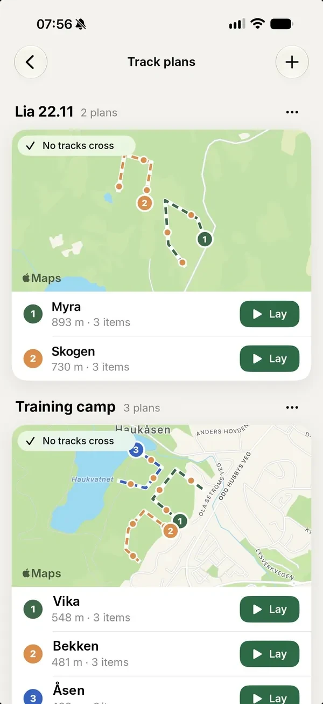
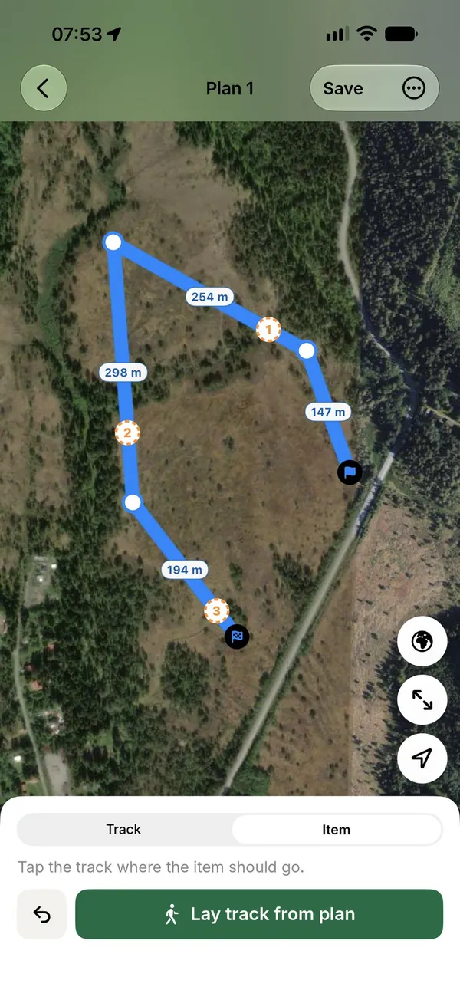

What’s new in Trax
Updates are free for everyone who has the app.
Version 2.6: Track plans
November 2026 · iPhone
Plan your tracks on the map at home, and lay them by the plan out in the field.
- Draw the track on the mapTap in legs and items, and see the length of each leg and the whole track.
- Groups for the training dayGather the tracks for the same day and area on one map, and see at once if any of them cross or lie too close.
- Lay tracks by the planThe plan is shown dashed on the map while you lay the track, with the other tracks in the group faintly around it.
- Share with the track layerSend the plan to whoever is laying the track, and it lands straight in Trax. Or share it as GPX.


Version 2.5: New track detail and the dog page
October 2026 · iPhone and Android
A new track detail and a page for each dog.
- New track detailA large map at the top with playback, and tabs for Overview, Deviation, Items and Conditions. A new graph shows the deviation along the track.
- The dog pageTap the paw on the home screen to see key figures, goals, training elements and the progress of each dog.
- “Crosses here” on IGP tracksTap where the cross track will cross, and the crossing counts towards the IGP requirement and gives an alert when the dog tracks past.
- Indication in searchDown, sit, stand, retrieve or past in article search, and passive indication, bringsel or barking in area search.
- Correct finds afterwardsTap an item in a saved track and choose Found or Not found.
- Place names and scaleTracks without their own name get a place name and date, and the maps now have a scale.
Tracks that are waiting have the same look as finished tracks, you rotate the IGP template and shape the search field with one tap and drag, and the IGP requirement for FH 2 and FH 3 now counts crossings correctly. “Import track” and the user manual are now in Settings.